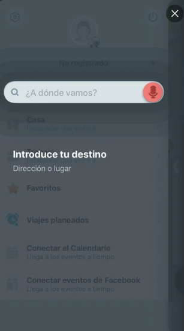
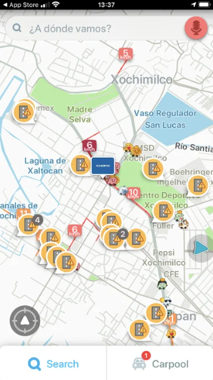
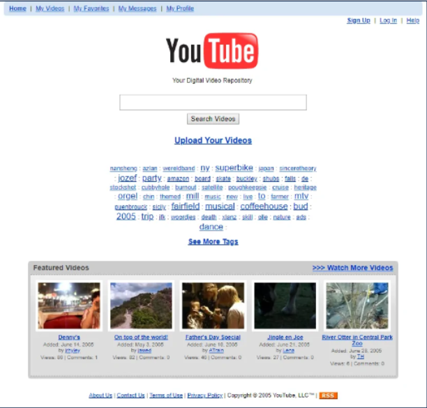

Análisis de Diseño Web Centrado en el Usuario (DCU): ¿Qué es?, Etapas, Beneficios y Ejemplos
¿Qué es DCU?
El objetivo es crear productos que satisfagan las necesidades
y solucionen los problemas de los usuarios a los que están destinados.
Este proceso iterativo se centra en analizar y mapear las necesidades de
los usuarios a lo largo de su experiencia, para que un sitio web o
plataforma ofrezca una experiencia de uso sencilla, satisfactoria y memorable.
«Ningún producto es una isla. Un producto es más que el producto.
Es un conjunto cohesivo e integrado de experiencias.» Donald Norman.
Para recolectar información que permita mejorar constantemente el diseño,
se emplean diversas técnicas y herramientas de investigación, que van desde
la famosa lluvia de ideas, hasta entrevistas, formularios y cuestionarios.
Etapas del DCU
Mejorar la experiencia del usuario no se trata solo de usar herramientas digitales,
sino también de iterar, es decir, repetir y optimizar procesos. Realizamos pruebas,
recogemos datos de los usuarios, identificamos áreas de mejora, implementamos
los cambios y evaluamos los resultados.
Las 4 etapas son:
Concepto
Definición
Conocer el contexto del usuario
No sirve de nada tener las mejores ideas si no se
ajustan al contexto de nuestro público objetivo. Por eso, primero debemos investigar
y entender la realidad de nuestros usuarios.
Comprender las necesidades y requisitos
Una vez que tenemos la información, es esencial
entender las necesidades y demandas específicas de los usuarios. Por ejemplo, un aspecto crítico
es el método de pago. Si hay un error en esta etapa, podría arruinar todo el proceso de compra,
haciendo que perdamos la venta y todo el trabajo previo.
Diseñar las soluciones
Entendidos los problemas, pasamos a la parte práctica y creativa:
buscar la forma de crear soluciones para estos problemas.
Evaluar los resultados
Por último, evaluamos los resultados para ver si nuestras ideas
fueron efectivas o si aún necesitamos mejorarlas.
¿Cuáles son los Beneficios del Diseño Centrado en el Usuario?
Algunos puntos clave para tomar decisiones acertadas sobre la implementación de un sitio web basado
en el diseño centrado en el usuario son:
Ejemplos de DCU
Ahora que entendemos los principios y procesos del diseño centrado en el usuario, veamos algunos ejemplos.
Ejemplo: WAZE
Waze proporciona a los usuarios una sensación de control, permitiéndoles ser participantes activos en la mejora
del sistema. En este sentido, Waze es una de las primeras empresas en implementar un diseño completamente
centrado en el usuario.


Ejemplo: YouTube
Comenzó con un diseño simple y claro que ofrecía videos con una resolución de 320x340 y una proporción de aspecto 4:3.
Además, estaba orientado a las búsquedas en computadoras.

YouTube ha evolucionado significativamente con la revolución de los smartphones, adaptando su diseño en navegador para
todos los dispositivos. Esto garantiza una experiencia cómoda para los usuarios mientras disfrutan del contenido.
Con su renovación visual en 2017, destacada por el icónico botón de reproducción integrado en el logotipo, YouTube ha
fortalecido su posición como plataforma multimedia y red social líder. Su éxito se debe a su capacidad para entender
las necesidades de los usuarios y anticiparse a las tendencias emergentes.
Ejemplo: Los hilos de Twitter
Twitter inicialmente limitó las publicaciones a 140 caracteres, luego aumentó este límite a 280. Los tuits eran independientes
y carecían de conexión clara entre sí, dificultando seguir narrativas largas. Los usuarios empezaron a numerar sus tuits para
crear hilos coherentes, marcándolos como parte de una secuencia con "(1, 2, 3... N)" o indicando su posición ("1 de 5; 3/22").
En respuesta, Twitter introdujo la función de hilos, permitiendo agrupar tuits relacionados bajo una sola conversación y mostrando
la opción "Mostrar este hilo" para identificarlos claramente.
Si haces clic en uno de esos tuits sin saber que forman parte de un hilo, verás una línea que los conecta visualmente, indicándote
la secuencia y cómo se relacionan entre sí. Esto te permite entender la continuidad del hilo y dónde comienza y termina.